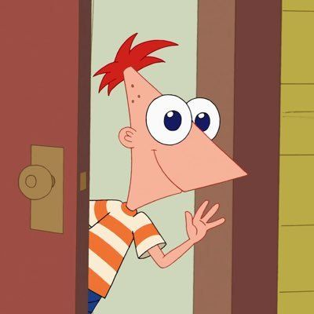
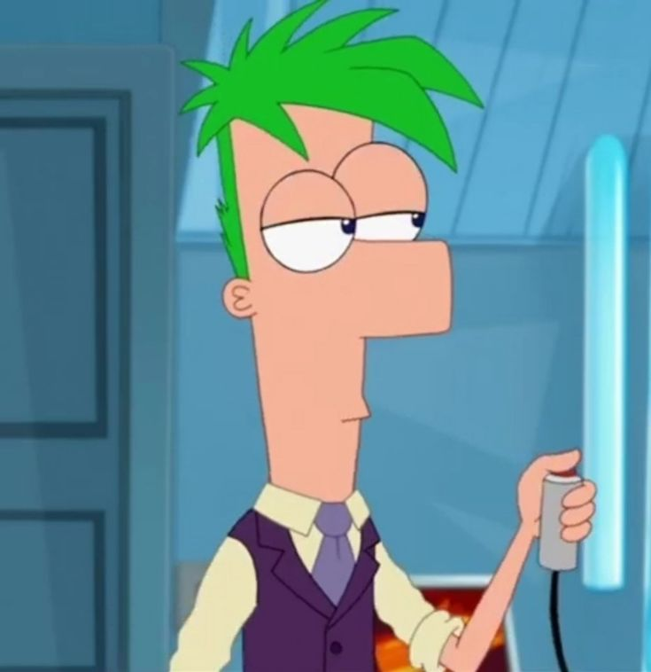
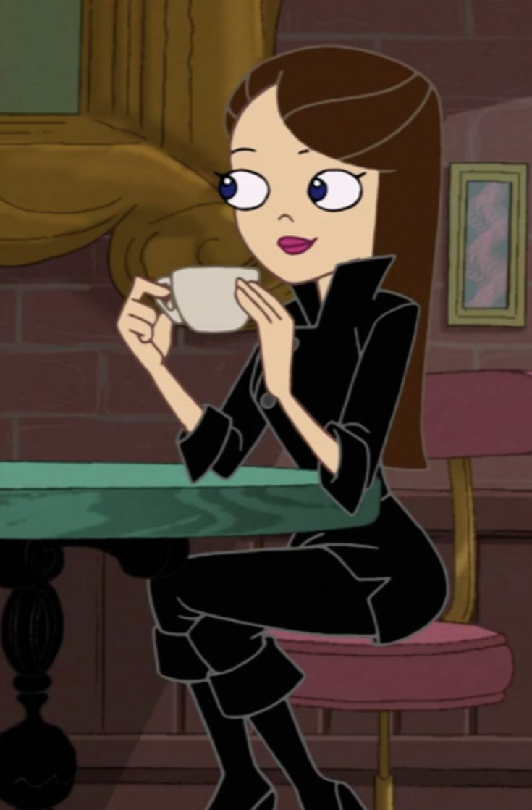

| Who?!??!?!? | Infow `⎚⩊⎚´ -✧ | Super cool or nah???? |
|---|---|---|
|  | Phineas is one of the main characters in the cartoon series, "Phinease and Ferb". His full name is Phineas Flynn and in this cartoon, he attempts to inspire other with his optimism. He mostly does it with his sister Candance though. He is highly intelligent, imaginative, optimistic and adventorous. Describing him as someone who thinks big. There are conspiracy theories that Phineas isn't really the son of his dad in the cartoon but lets not dwell into that......!!!!!! |
YES!!!! Phineas is super duper cool cuz why not mga dudes ପ(๑•ᴗ•๑)ଓ ♡ |
|  | Just like Phineas, Ferb is extremely smart. Not only that, but he's the step-brother of Phineas but instead of Flynn, his last name is Fletcher. He is a nonverbal autistic whose social withdrawal got so bad he couldn't go to normal school 'cause then he would start to break down. He expresses himself in his actions rather than words because as I said, he's autistic. Fun fact, he has only said 2598 words throughout all 222 aired episodes!!! Crazy right?? |
Ferb is super cool and very very nice!! (and super cute 😜) |
|  | Next, Vanessa Doofenshmirtz!!! She is future Ferb's girlfriend but also is the daughter of some villain being portrayed in the cartoon, Dr. Doofenshmirtz. She is tall, beautiful, brunette, and very charming. | Not only is she super cool, but super duper pretty 😘 (i have a crush on her) |